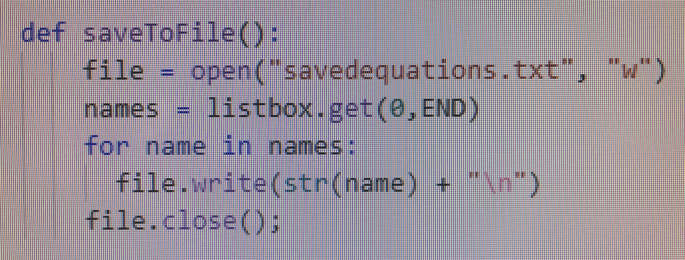
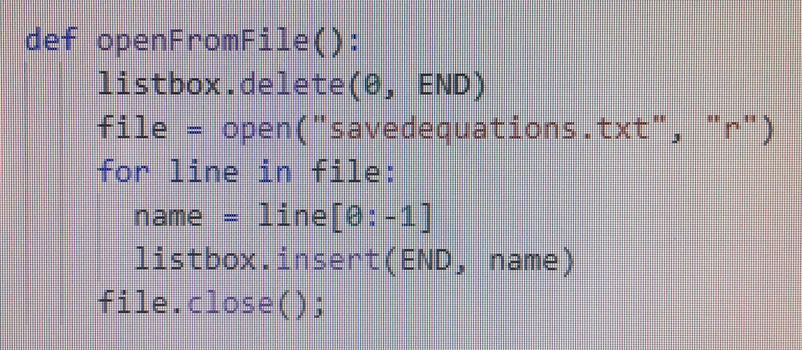

The overall purpose of the program is a calculator which is able to solve simple addition equations that equal 100 and save them to a list. The video describes a simple addition equations and the inputs required to find the answer and clear the workspace. To create an error free equation you must choose one number and between another number an addition sign then click on the equals button. This will result in the calculation of your equation and the answer will present itself on the same box you typed your equation in.
|  |  | |
|---|---|---|
| There is a dropdown button in the menu tab labeled file, which drops down to a save button. Which saves the equation as a list to a file labeled “savedequations.txt”. | In the same dropdown menu there is another button which states open, which allows you to access the list that you saved to “savedequations.txt”. | This line of code identifies the specific file in which the list will be saved to. |
The data contained in the list are past equations or answers the user decided to save to the file “savedequations.txt”. If something is wrong with the input an error message will occur which will make saving it to the list will be unavailable until the equation is fixed.